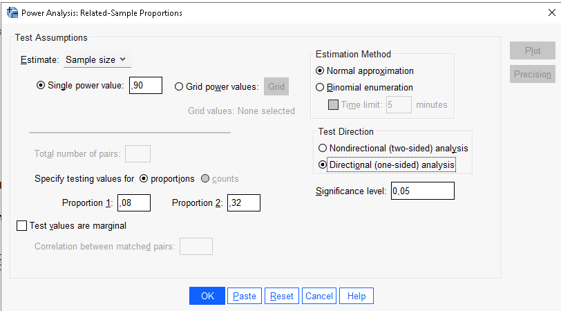

Paired Samples Proportions
Validation
0.2.0
For paired samples proportions difference, tested with McNemar’s test, different software produces sligthly different parameters, so we compare PAMLj with different approach. We make comparisons G*Power, R MASS package, and vanilla R computation taken from powerandsamplesize.com we size. powerandsamplesize.com we size is particularly interesting because they show the actual code used to obtain the power parameters. We also compare the results with SPSS v29
The paired samples proportions difference is applied to a 2 X 2 table in which each cell define the proportion of pairs of cases in each combination of the two variables levels. The 2 X 2 table, cross-classifying factor A and factor B, looks like this:
| A1 | A2 | |
|---|---|---|
| B1 | P11 | P21 |
| B2 | P12 | P22 |
In this table, \(P12\) and \(P21\) indicate the proportion of discordant cases, which total to \(D=P12+P21\). Now, PAMLj requires these two proportions as input, with the constraint that \(P21<P12\). Notice that the order of the factor level is arbitrary, so the constraint does not limit the application of the test. Gpower requires an odd ratio as input, which in this setup corresponds to \(Odd=P21/P12\), and the proportion of discordant cases, \(D=P12+P21\).
Example 1: Sample size
Setup
- Aim = N
- P1 = .32
- P2 = .08
- D = .40
- Odd-ratio = 4
- Power = .90
- Alpha = .05
- Tails = Two
PAMLj
The expected N is 69 (pairs).
R
powerandsamplesize.com we size
p12=0.32
p21=0.08
alpha=0.05*1
beta=0.10
pdisc=p21+p12
pdiff=p12-p21
(n=((qnorm(1-alpha/2)*sqrt(pdisc)+qnorm(1-beta)*sqrt(pdisc-pdiff^2))/pdiff)^2)## [1] 68.71646## [1] 69Results are exactly the same.
MESS package
p12=0.32
p21=0.08
alpha=0.05
beta=0.10
MESS::power_mcnemar_test(psi=4,paid=p21,power=1-beta,method="normal",sig.level=.05)##
## McNemar paired comparison of proportions approximate power calculation
##
## n = 68.71646
## paid = 0.08
## psi = 4
## sig.level = 0.05
## power = 0.9
## alternative = two.sided
##
## NOTE: n is number of pairsrounding we obtain \(N=69\).
G*Power
SPSS

So, all results converge to \(N=69\) but for GPower, which is offset of 1 unit.
Example 2 : One-Tailed
Setup
- Aim = N
- P1 = .32
- P2 = .08
- D = .40
- Odd-ratio = 4
- Power = .90
- Alpha = .05
- Tails = One
PAMLj
The expected N is 56 (pairs).
R
MESS package
p12=0.32
p21=0.08
alpha=0.05
beta=0.10
MESS::power_mcnemar_test(psi=4,paid=p21,power=1-beta,method="normal",sig.level=.05,alternative="one.side")##
## McNemar paired comparison of proportions approximate power calculation
##
## n = 55.63893
## paid = 0.08
## psi = 4
## sig.level = 0.05
## power = 0.9
## alternative = one.sided
##
## NOTE: n is number of pairsrounding we obtain \(N=56\).
G*Power
Again, GPower is slightly offset as compared with
MESS::power_mcnemar_test() and PAMLj, but the results are basically the
same.
SPSS

As above, SPSS is aligned with all other software but GPower, slightly offset.
Comments?
Got comments, issues or spotted a bug? Please open an issue on PAMLj at github or send me an email